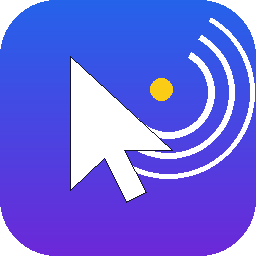

Um autoclicker leve, configurável e open source para Windows — sem instalar Python, sem travar quando você mais precisa.
Ação configurável: clicar um botão do mouse ou pressionar uma tecla do teclado, em clique único ou segurando pressionado por um tempo definido.
Defina qualquer tecla ou botão como atalho, em modo alternar (liga/desliga) ou segurar para ativar — mesmo usando o mesmo botão como atalho e como ação, sem travar.
Crie vários autocliques independentes, cada um com sua própria ação, intervalo e gatilho, todos rodando ao mesmo tempo.
Posição atual ou fixa do mouse (com variação aleatória e indicador visual na tela), intervalo com variação aleatória, repetição por contagem ou duração.
Salve combinações inteiras de configuração e recarregue quando quiser, sem reconfigurar tudo de novo.
Minimiza para a bandeja em vez de fechar, pode iniciar com o Windows e se atualizar sozinho quando sai uma versão nova.
ClickForge.exe na página de releases — não precisa instalar nada.O ClickForge é distribuído sob a licença MIT: qualquer pessoa pode usar, estudar, modificar e redistribuir o código livremente. Contribuições e sugestões são bem-vindas no repositório no GitHub.